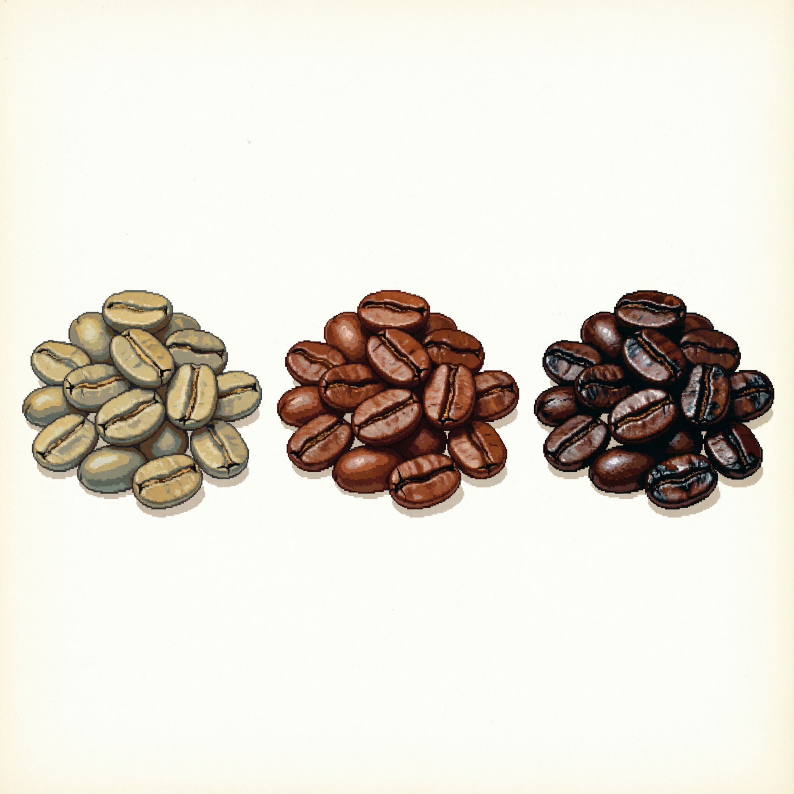

IE Inference Engine
IE is a lightweight C99 inference engine for microcontrollers, embedded CPUs, and domain-specific models running fully on-device. Version 2 combines compact CNN graphs with local decoder-only generation while preserving deterministic memory ownership and a small runtime footprint.

Design principles
No runtime heap requirement. The application owns the model and memory pool.
Offline-first execution. Graph analysis, layout selection, quantization metadata, and memory planning are completed before the hot path.
Compact model representation. Strata stores CNN execution data; IEM stores decoder-only models, tokenizer data, and optional delegate streams.
Portable numerical fallback. Scalar kernels remain the reference for SIMD and accelerator implementations.
Explicit resource boundaries. Unsupported formats, capacities, and hardware features return an error instead of silently changing semantics.
Capability overview
Area |
Version 2 capability |
|---|---|
CNN inference |
FP32/INT8 static graphs, Strata v3, static memory planning, TFLite differential tests |
Local generation |
Qwen3-compatible decoder path, chunked prefill, KV cache, sampling, tokenizer |
CPU optimization |
Scalar fallback plus optional NEON, MVE, RVV, and x86 kernels |
Accelerator integration |
Registry, offline delegate commands, layout matching, CPU fallback |
Product profiles |
CNN_ONLY, LLM_ONLY, LLM_STREAM, LLM_W4A8, FULL, and feature-level trimming |
Documentation
Using IE
Architecture and maintenance
Application gallery
Image classification

MNIST digit recognition |

Vegetable and fruit classification |
 Coffee bean grading |
Object detection

Food detection |
Local decoder-only models demonstrates the other version 2 direction: compact, local, domain-specific text generation without a server. |
Validation scope
Host regression, ASan/UBSan, differential tests, QEMU, and Renode provide functional and numerical evidence. They do not replace target-board latency, power, stack high-water, or long-duration validation.
License
IE is distributed under the Apache License 2.0. Model and dataset assets may
have independent licenses; review benchmark/ASSETS.md before redistribution.